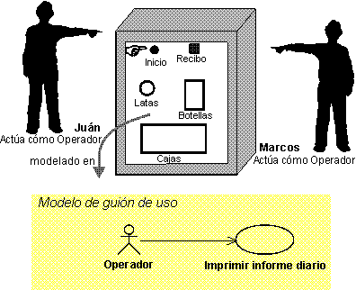
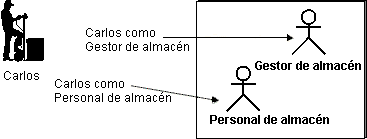
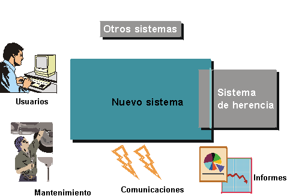
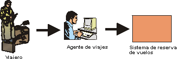
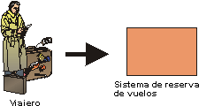

| Directriz: Actor |
 |
|
| Elementos relacionados |
|---|
ExplicaciónPara comprender totalmente el objetivo del sistema, debe saber para quien es el sistema, es decir, quien utilizará el sistema. Los diferentes tipos de usuarios se representan como actores. Un actor es cualquier cosa que intercambia datos con el sistema. Un actor puede ser un usuario, hardware externo, u otro sistema. La diferencia entre un actor y un usuario de sistema individual es que un actor representa una clase concreta de usuario en lugar de un usuario real. Varios usuarios pueden tener el mismo rol, lo que significa que pueden ser el mismo actor. En este caso, cada usuario constituye una instancia del actor.  Juan y Marcos son operadores de una máquina de reciclaje. Cuando utilizan la máquina, cada uno está representado con una instancia del actor Operador. Sin embargo, en algunas situaciones, sólo una persona realiza un rol modelado por un actor. Por ejemplo, es posible una sola persona esté realizando el rol de administrador del sistema para un sistema más bien pequeño. El mismo usuario también puede actuar como varios actores (es decir, la misma persona puede desempeñar diferentes roles).  Carlos utiliza el Sistema de manipulación de almacén principalmente como Gestor de almacén, pero en algunas ocasiones también utiliza el Sistema de manipulación de almacén como Personal de almacén ordinario. Cómo encontrar actores ¿En el entorno del sistema, qué se convertirá en actor para el sistema? Empiece por las personas que utilizarán en sistema. ¿Cómo se las puede categorizar? Suele ser positivo tener a varias personas (dos o tres) en cuenta y asegurarse de que los actores que identifique cubren las necesidades. Resulta útil tener en cuenta el conjunto de preguntas siguientes cuando esté identificando actores:
Existen diferentes aspectos del entorno de un sistema que representará como actores distintos:
Ejemplo:Para un Sistema de manipulación de almacén, que da soporte al trabajo en un almacén, existen diferentes categorías de usuarios: Personal de almacén, Encargado del registro de pedidos, Gestor de almacén. Todas estas categorías tienen roles específicos en el sistema y debe representar cada una de ellas con un actor distinto.
Ejemplo:En una máquina de reciclaje que se utiliza para reciclar latas, botellas y cajas, el Cliente es el actor principal, para quien se ha construido, principalmente, el sistema. Sin embargo, alguien tiene que manejar la máquina. Este rol se representa con el actor Operador.
Ejemplo:Un sistema de ventilación que controla la temperatura de un edificio obtiene continuamente las mediciones de los sensores del edificio. Por lo tanto, un sensor es un actor.
Ejemplo:Un cajero automático debe comunicar con el sistema central que controla las cuentas bancarias. El sistema central probablemente es externo y, por lo tanto, debe ser un actor. Si está compilando una aplicación basada en Internet, los actores principales serán, en cierto modo, anónimos. En realidad, no necesita saber quienes son, y no puede realizar conjeturas sobre sus habilidades e historial. Pero todavía puede describir el rol que espera de ellos respecto a su sistema. Ejemplo: Los sistemas que proporcionan información (como los motores de búsqueda) tendrán actores puramente anónimos que acceden a la aplicación sólo para encontrar información sobre un tema concreto. Ejemplo: Los sitios de información del gobierno cuyo objetivo es proporcionar información a cualquier ciudadano o usuario de la red sobre leyes y normativas, prácticas, formularios, etc. Por ejemplo, en Estados Unidos el Servicio de recaudación de impuestos tiene una página que proporciona información sobre cómo completar la declaración de la renta. Esto incluye que todos los formularios estén disponibles de forma electrónica, y permitir que los usuarios envíen la declaración de forma electrónica. El rol del actor principal en este caso es cualquiera que esté interesado en como se envía una declaración de la renta en Estados Unidos. Por supuesto, cuando una persona intenta enviar la declaración, ya no puede ser anónima. Actores que ayudan a definir los límites del sistemaEncontrar a los actores también significa que usted establece los límites del sistema, que ayudan a comprender el objetivo y el ámbito del sistema. Sólo los que comunican directamente con el sistema deben considerarse actores. Si está incluyendo más roles que los del entorno del sistema, está intentando efectuar un modelo de empresa donde se utilizará el sistema, no el sistema mismo. Ejemplo:En un sistema de reserva de vuelos, ¿qué sería un actor? Esto depende de si está creando un sistema de reserva de vuelos que se utilizará en una agencia de viajes, o si está creando un sistema al que el pasajero puede conectar directamente a través de Internet.  Si está creando un sistema de reservas de vuelos que se utilizará en una agencia de viajes, el actor será el agente de viajes. El viajero no interactúa directamente con el sistema y, por lo tanto, no es un actor  Si está creando un sistema de reservas que permitirá a los usuarios conectar a través de Internet, el viajero interactuará directamente con el sistema y, por lo tanto, es el actor del sistema. Descripción breveLa descripción breve del actor debe incluir información sobre:
La descripción breve debe contener, como mínimo, unas cuantas frases. Ejemplo:En el modelo de caso de uso de la máquina de reciclaje, los tres actores se describen brevemente del modo siguiente: Cliente: El Cliente recoge botellas, latas y cajas en casa y las devuelve a la tienda para obtener el reembolso. Operador: El Operador es responsable del mantenimiento de la máquina de reciclaje. Gestor: El Gestor es responsable de las cuestiones sobre dinero y servicio que la tienda ofrece a los clientes. Características del actorLas características de un actor pueden afectar al desarrollo del sistema y, especialmente, a cómo se forma visualmente una interfaz de usuario utilizable de modo óptimo. Tenga en cuenta que si los trabajadores de la empresa que corresponden a los actores ya están descritos en un modelo de objeto empresarial, es posible que alguna de las características siguientes ya se haya capturado. Las características incluyen:
En la mayoría de casos, una estimación aproximada del número de usuarios y la frecuencia de uso serán suficientes. Una diferencia de 30 y 40 no afectará a la forma de la interfaz de usuario, pero una diferencia de 3 y 30 podría afectar. Otras características de los actores incluyen:
Estas características se utilizan principalmente para identificar las clases de límite y el prototipo, para garantizar la mejor utilización entre la comunidad de usuario y el diseño de interfaz de usuario. Ejemplo:A continuación se muestra un ejemplo de las características del actor Usuario de correo. Este es el actor que, entre otros, interactúa con el caso de uso Gestionar mensajes de correo entrantes.
|
© Copyright IBM Corp. 1987, 2006. Reservados todos los derechos. |